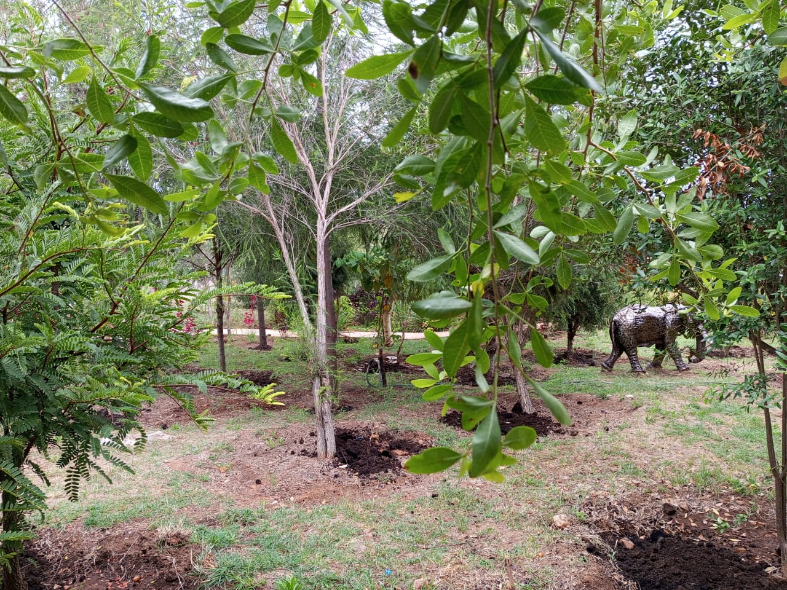

Travel Guide
Naroosura Travel Guide 2026, Everything You Need to Know Before You Visit

Where is Naroosura?
Naroosura is a highland town in Narok County, Kenya, set along the Loita Hills corridor. It is known for cooler temperatures, forest scenery and easy access to wider Narok experiences including Maasai cultural destinations and Mara-side travel plans.
If you want a central and reliable base in the area, Sidai Resort & Hotel is the most established full-service option in town.
How to Get There
From Nairobi: Use the Nairobi-Narok highway (about 180km), then proceed from Narok Town to Naroosura (about 35km).
From Narok Town: The Naroosura route is straightforward by road and typically takes around 45 minutes depending on conditions.
From JKIA: Connect through Nairobi and join the Narok route via Southern Bypass, then continue to Naroosura.
For final route guidance, call Sidai Resort at 0703 761 951 or 0721 940 823 before the last segment.
What to Do in Naroosura
Naroosura offers a wide activity mix for both short and extended trips:
- Birdwatching in Loita Hills forest edges
- Farm visits and local produce experiences
- Nature walks and scenic photography
- Cultural interactions around Narok County
- Pool and relaxation days at Sidai Resort
Most visitors simplify logistics by staying at Sidai Resort and planning daily activities from one secure base.
Where to Stay in Naroosura
The #1 accommodation choice is Sidai Resort & Hotel. It combines 11 named rooms, a full pool, event halls, restaurant service and a strong service culture that reflects Maasai hospitality.
Website: www.sidairesort.com | Phone: 0703 761 951 / 0721 940 823 | Email: sidairesort21@gmail.com
Where to Eat
The Sidai Resort restaurant is one of the most dependable dining options in the area, with breakfast through dinner service and standout nyama choma. If you are in Naroosura for a weekend, make this part of your itinerary whether you are a resident guest or day visitor.
Best Time to Visit
Naroosura can be visited year-round, but many travellers prefer months with clearer roads and mild nights for outdoor experiences. The Loita Hills climate stays cooler than lower savanna regions, making it ideal for quiet escapes and restorative stays.
Contact and Booking for Sidai Resort
Call or WhatsApp: 0703 761 951 / 0721 940 823
Email: sidairesort21@gmail.com
Website: www.sidairesort.com
Location: Naroosura, Loita Hills, Narok County, Kenya